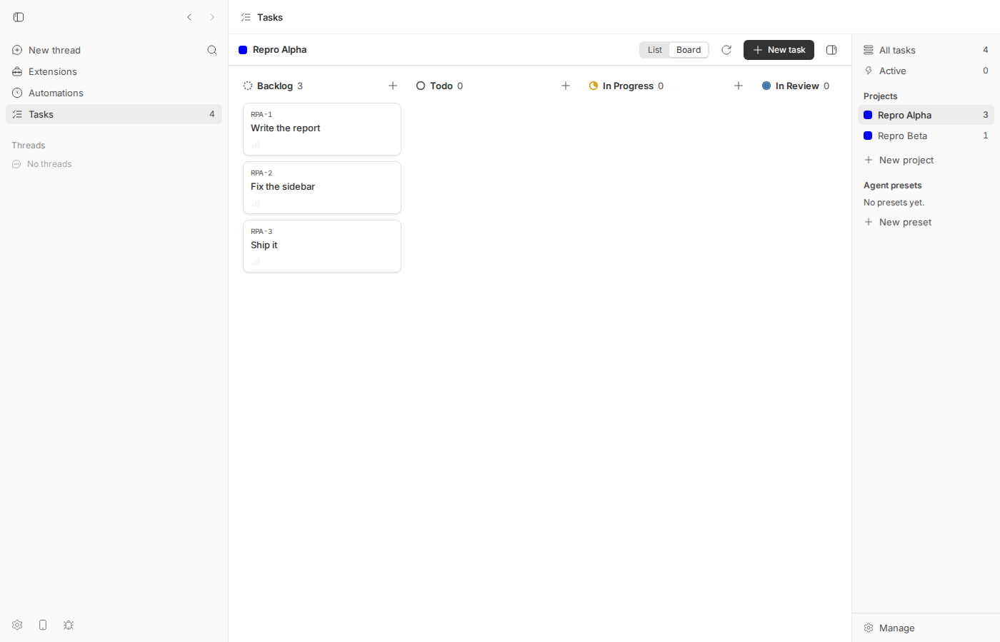
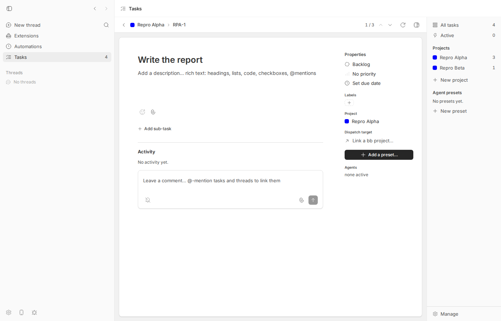
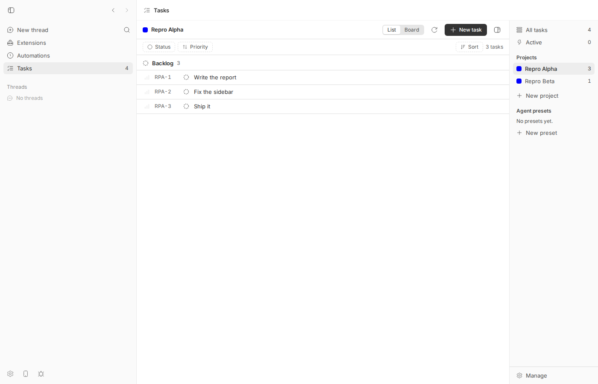

#1702 · Tasks: the List/Board choice is forgotten every time a project is reopened
TL;DR
Plain-language framing. The Tasks plugin shows a project's tasks either as a List or as a Board (kanban columns); a List/Board toggle sits in the top bar. The chosen view is encoded only in the URL (…/tasks/<projectId>?view=board, host-encoded as %3Fview%3Dboard). Nothing else remembers it.
What the user sees: pick Board, open a task card, then return to the project by clicking the project name in the breadcrumb, or by clicking the project in the Tasks sidebar, or by following a bare project link — and the project is back on the List. I reproduced every route the issue lists on a fresh dev instance (browser transcript and screenshots below), and wrote a shell-level vitest that fails on base and passes with PR #1704.
Why: three navigation sites hardcode view: "list" (breadcrumb, new-project dialog, sidebar fallback) and the route parser maps a marker-less <projectId> to "list". There is no persistence layer for the view, unlike the neighbouring sidebar-collapsed and list-filter preferences which live in localStorage. One nuance the issue overstates: the Back chevron / Esc from a task does return to the board (the shell keeps the last browse route in a ref for the session), and a reload of a ?view=board URL stays on the board; only marker-less routes lose it. PR #1704 adds a client-local localStorage preference and lets marker-less project routes resolve through it; it fixes the reported behaviour and I could not break it beyond two minor edge cases.
Claims vs findings
| Claim | Status | Evidence |
|---|---|---|
Sidebar project click carries the current route's view, falling back to "list" | Verified | plugins/tasks/shell/sidebar.tsx:265. Transcript step 5 (from a task route → list) and 6a (A board → B board carried), 6b (B list → A list, although A was last on board). |
Task breadcrumb navigates with hardcoded view: "list" | Verified | plugins/tasks/shell/topbar.tsx:279. Transcript step 4a; screenshots 02→03→04. |
New-project dialog navigates with view: "list" | Verified (code) | plugins/tasks/views/manage/new-project-dialog.tsx:153. Not exercised in browser (a brand-new project has no prior choice, so the visible effect is nil; the PR changes it anyway for consistency). |
A bare <projectId> subPath parses to "list", so a reload or deep link lands on the list | Partly verified | Parser: plugins/tasks/shell/routes.ts:52. A bare deep link lands on the list (step 7b). But a reload of the board URL stays on the board (step 7a) because the marker is in the URL; the "reload" half of the claim is inaccurate. |
| "Switching to Board, opening a task, and coming back puts you on the list again. Every single time." | Overstated | True for breadcrumb and sidebar. False for the Back chevron / Esc (step 4b) which uses lastBrowseRouteRef (plugins/tasks/shell/app-shell.tsx:239) and returns to the board, and false for browser Back (history entry has the marker). |
Sidebar-collapsed and list filter/sort preferences persist client-locally in localStorage | Verified | plugins/tasks/shell/sidebar-preference.ts (bb-tasks:sidebar-collapsed), plugins/tasks/views/list/list-preference.ts (localStorage read/write at lines 147/224). |
| Environment: bb 0.38.0, macOS | Unverifiable | Reproduced on Linux at 16ceb3a54; the code has not changed in plugins/tasks/shell since (see git log in Appendix), so the version does not matter. |
Environment
- bb
16ceb3a540f81c1189efaffb27a39b1d9443abf5(main, 2026-08-18); worktree/home/sawyer/projects/bb/.claude/worktrees/wf_242c3e11-a10-36. - Linux 7.0.0-29-generic, node v24.18.0, headless Chromium via
dev-browser(Playwright), viewport 1400×900. - Dev instance: app
http://localhost:14761, serverhttp://localhost:22761, host daemon:30761, data dir/home/sawyer/.bb-dev/projects-bb-.claude-worktrees-wf_242c3e11-a10-36-73cf4631d791. No agent turns were run. - Tasks plugin is not installed by default on a fresh dev instance; installed with
bb plugin install builtin:tasks --yes(tasks@0.1.1). Tasks projectsRepro Alpha(RPA, id01M09XXCTYKRXTHNA44GPBE6RE, 3 tasks) andRepro Beta(RPB, id01M09XXDE4K29Y0TFQP4NGZ44X, 1 task). git fetch origin main: no commits touchingplugins/tasksafter the base commit; not fixed on main. PR #1704 is open, mergeable, no CI checks reported.
Minimal reproduction
A. Browser (what the user sees)
- Build and start a dev instance:
pnpm install --frozen-lockfile --prefer-offline && pnpm exec turbo run build && scripts/bb-dev-app current. Note the App and Server URLs. - Install the plugin and seed data (replace the server URL with yours):
export BB_SERVER_URL=http://localhost:22761 node packages/scripts/dist/commands/run-cli.js plugin install builtin:tasks --yes node packages/scripts/dist/commands/run-cli.js tasks project create --name "Repro Alpha" --prefix RPA --json # note "id" node packages/scripts/dist/commands/run-cli.js tasks project create --name "Repro Beta" --prefix RPB --json node packages/scripts/dist/commands/run-cli.js tasks create --project RPA --title "Write the report" --json node packages/scripts/dist/commands/run-cli.js tasks create --project RPA --title "Fix the sidebar" --json node packages/scripts/dist/commands/run-cli.js tasks create --project RPA --title "Ship it" --json node packages/scripts/dist/commands/run-cli.js tasks create --project RPB --title "Beta task" --json
- Manually: open
<App>/plugins/tasks/tasks/<RPA id>, click Board, click card RPA-1, then click the Repro Alpha breadcrumb in the top bar. Expected: Board. Actual: List. Same when clicking Repro Alpha in the right-hand Tasks sidebar from the task page. - Scripted (edit
APP,A,Bat the top): 1702/repro/browser-repro.js, run withdev-browser --browser bb1702 --headless --timeout 150 run browser-repro.js. Output on base (raw); each line prints the URL and thearia-pressedstate of the List/Board toggle buttons:
[1 open project A bare] url=http://localhost:14761/plugins/tasks/tasks/01M09XXCTYKRXTHNA44GPBE6RE List.aria-pressed=true Board.aria-pressed=false [2 clicked Board] url=http://localhost:14761/plugins/tasks/tasks/01M09XXCTYKRXTHNA44GPBE6RE%3Fview%3Dboard List.aria-pressed=false Board.aria-pressed=true [3 opened task RPA-1] url=http://localhost:14761/plugins/tasks/tasks/task/RPA-1 List.aria-pressed=n/a Board.aria-pressed=n/a [4a breadcrumb -> project (EXPECTED board, ACTUAL ?)] url=http://localhost:14761/plugins/tasks/tasks/01M09XXCTYKRXTHNA44GPBE6RE List.aria-pressed=true Board.aria-pressed=false [4b Back chevron -> project (session ref keeps board)] url=http://localhost:14761/plugins/tasks/tasks/01M09XXCTYKRXTHNA44GPBE6RE%3Fview%3Dboard List.aria-pressed=false Board.aria-pressed=true [5 sidebar click from task -> project (EXPECTED board, ACTUAL ?)] url=http://localhost:14761/plugins/tasks/tasks/01M09XXCTYKRXTHNA44GPBE6RE List.aria-pressed=true Board.aria-pressed=false [6a sidebar A(board) -> B (carries current view)] url=http://localhost:14761/plugins/tasks/tasks/01M09XXDE4K29Y0TFQP4NGZ44X%3Fview%3Dboard List.aria-pressed=false Board.aria-pressed=true [6b sidebar B(list) -> A (A was last on board; EXPECTED board, ACTUAL ?)] url=http://localhost:14761/plugins/tasks/tasks/01M09XXCTYKRXTHNA44GPBE6RE List.aria-pressed=true Board.aria-pressed=false [7a reload of ?view=board URL] url=http://localhost:14761/plugins/tasks/tasks/01M09XXCTYKRXTHNA44GPBE6RE%3Fview%3Dboard List.aria-pressed=false Board.aria-pressed=true [7b bare deep link after having chosen board] url=http://localhost:14761/plugins/tasks/tasks/01M09XXCTYKRXTHNA44GPBE6RE List.aria-pressed=true Board.aria-pressed=false localStorage keys: []
Steps 4a, 5, 6b and 7b are the bug (Board expected, List shown). Steps 4b and 7a show the two paths that do keep the board. The last line shows there is no tasks-related view key in localStorage on base.

%3Fview%3Dboard.


B. Unit-level (vitest, fails on base, passes with #1704)
File: 1702/repro/issue-1702.repro.test.tsx. Copy to plugins/tasks/shell/ and run cd plugins/tasks && pnpm exec vitest run shell/issue-1702.repro.test.tsx. It renders the Tasks nav panel through the plugin-SDK test host, clicks the Board toggle (asserting the navigation to <id>?view=board), unmounts, re-renders the panel with the marker-less subPath and asserts the Board segment is pressed.
// @vitest-environment jsdom
// Repro for get-bb/bb#1702: the Tasks List/Board choice is forgotten when a
// project is reopened without a `?view=` marker. FAILS on 16ceb3a54 (base),
// PASSES with PR #1704 applied.
import { cleanup, fireEvent } from "@testing-library/react";
import { afterEach, beforeEach, describe, expect, it } from "vitest";
import { loadPluginApp, renderSlot } from "@get-bb/plugin-sdk/testing/app";
if (!window.matchMedia) {
window.matchMedia = (query: string) => ({
matches: false,
media: query,
onchange: null,
addListener: () => {},
removeListener: () => {},
addEventListener: () => {},
removeEventListener: () => {},
dispatchEvent: () => false,
});
}
const app = await loadPluginApp(() => import("../app"));
beforeEach(() => window.localStorage.clear());
afterEach(() => cleanup());
const PROJECT_ID = "01HZZZZZZZZZZZZZZZZZZZZZP1";
const project = {
id: PROJECT_ID,
name: "Tasks Plugin",
prefix: "TSK",
nextTaskNumber: 5,
color: "blue",
folderId: null,
linkedBbProjectId: null,
createdAt: "2026-07-15T00:00:00.000Z",
};
const rpc = {
listProjects: () => ({ projects: [project] }),
listFolders: () => ({ folders: [] }),
listPresets: () => ({ presets: [] }),
listLabels: () => ({ labels: [] }),
sidebarSummary: () => ({
projects: [{ projectId: PROJECT_ID, taskCount: 3, activeAgentCount: 0 }],
}),
listTasks: () => ({ tasks: [] }),
getTaskByKey: () => ({ task: null }),
};
const openProject = (subPath: string) =>
renderSlot(app.navPanels[0]!, { subPath }, { rpc });
describe("#1702 project view persistence", () => {
it("reopening a project without a marker restores the last chosen view", async () => {
// 1. Pick Board via the topbar toggle (navigates to <id>?view=board).
const first = openProject(PROJECT_ID);
fireEvent.click(await first.findByRole("button", { name: "Board" }));
expect(first.navigateCalls).toContainEqual({
method: "toPluginPanel",
path: "tasks",
options: { subPath: `${PROJECT_ID}?view=board` },
});
first.lifecycle.unmount();
// 2. Reopen the project the way the sidebar / breadcrumb / new-project
// dialog / deep link do: with no view marker.
const reopened = openProject(PROJECT_ID);
const board = await reopened.findByRole("button", { name: "Board" });
// On base this is "false": the bare route parses to "list" and nothing
// remembers the choice.
expect(board.getAttribute("aria-pressed")).toBe("true");
});
});
On base (raw) the final assertion fails: expected 'false' to be 'true' — the bare route parsed to "list":
RUN v4.1.1 /home/sawyer/projects/bb/.claude/worktrees/wf_242c3e11-a10-36/plugins/tasks
❯ bb-plugin-tasks shell/issue-1702.repro.test.tsx (1 test | 1 failed) 216ms
× reopening a project without a marker restores the last chosen view 215ms
⎯⎯⎯⎯⎯⎯⎯ Failed Tests 1 ⎯⎯⎯⎯⎯⎯⎯
FAIL bb-plugin-tasks shell/issue-1702.repro.test.tsx > #1702 project view persistence > reopening a project without a marker restores the last chosen view
AssertionError: expected 'false' to be 'true' // Object.is equality
Expected: "true"
Received: "false"
❯ shell/issue-1702.repro.test.tsx:70:48
68| // On base this is "false": the bare route parses to "list" and no…
69| // remembers the choice.
70| expect(board.getAttribute("aria-pressed")).toBe("true");
| ^
71| });
72| });
⎯⎯⎯⎯⎯⎯⎯⎯⎯⎯⎯⎯⎯⎯⎯⎯⎯⎯⎯⎯⎯⎯⎯⎯[1/1]⎯
Test Files 1 failed (1)
Tests 1 failed (1)
Start at 08:01:47
Duration 2.15s (transform 421ms, setup 69ms, import 1.28s, tests 216ms, environment 480ms)
With PR #1704 cherry-picked onto base (raw): Tests 1 passed (1).
Root cause
The view mode is a URL-only value with a hardcoded default, and three navigation sites do not propagate the user's last choice:
plugins/tasks/shell/routes.ts:52— the parser:view: view === "board" ? "board" : "list". Any project route without?view=boardis a list. ConsequentlytasksRouteToSubPath(plugins/tasks/shell/routes.ts:69) emits a bareprojectIdfor list, so "list" and "no view named" are indistinguishable.plugins/tasks/shell/topbar.tsx:279— the task-page breadcrumb:onNavigate({ kind: "project", projectId: project.id, view: "list" }).plugins/tasks/shell/sidebar.tsx:265— the sidebar:view: route.kind === "project" ? route.view : "list". From a task/all/active/manage route this is always list; from a project route it carries the current project's view, not the target project's last view.plugins/tasks/views/manage/new-project-dialog.tsx:153— new project:view: "list".
The only memory of a chosen view is lastBrowseRouteRef in the shell (plugins/tasks/shell/app-shell.tsx:239), used exclusively by the Back chevron / Esc from a task page, and it lives only for the mounted session. There is no persisted preference, whereas the two sibling preferences (shell/sidebar-preference.ts, views/list/list-preference.ts) are stored in localStorage. So the visible symptom follows directly: every route into a project that does not spell out ?view=board lands on the list.
No deeper server/daemon issue; this is purely client-side plugin UI state.
Proposed fix (first principles)
Distinguish "no view named" from "list" and resolve the former through a client-local preference, exactly the way PR #1704 does: make TasksRoute.project.view nullable, keep the parser strict ("list" | "board" | null), store the choice per project in localStorage whenever the user picks a view, and resolve null at render time. Two refinements over the PR that I would make:
- Record the preference from the rendered route (an effect on
subPathwhen the parsed view is explicit) rather than only inside the shell's navigation wrapper. That way a view reached via URL (deep link, bookmark, browser history) also counts as "last used", and the recording does not depend on every future caller routing through the shell's wrappednavigation.go(the views call the rawuseTasksNavigation()hook directly). - Memoize
resolveRoute(parseTasksRoute(subPath))onsubPath; the PR re-reads and JSON-parseslocalStorageon every shell render.
What could go wrong: the "unseen project follows the last view chosen anywhere" fallback is a product choice (the PR picks it to preserve the feel of the old sidebar carry-over); some users may prefer a fixed list default. Neither choice affects correctness.
PR review — #1704 "Tasks: remember the List/Board choice per project"
What it changes (full diff, +308/−19, 8 files, all under plugins/tasks/): TasksRoute.project.view becomes TaskViewMode | null; new ResolvedTasksRoute for what the shell renders; new shell/view-preference.ts (localStorage key bb-tasks:view-preferences, versioned document {version, lastUsed, projects}); the shell wraps navigation.go to store any explicit project view and resolves null via loadViewMode; sidebar, breadcrumb and new-project dialog navigate with view: null; parser returns null for missing/unknown markers; tasksRouteToSubPath now emits ?view=list for an explicit list. Tests: view-preference.test.ts (4) and 4 new shell tests.
Does it address the root cause? Yes — it fixes all four sites named in the issue and adds the missing persistence layer at the same client-local boundary as the sibling preferences. Not a symptom patch.
Tests I ran. The PR branches from fb264aff4 (21 commits behind base); it cherry-picks cleanly onto 16ceb3a540f81c1189efaffb27a39b1d9443abf5. pnpm exec turbo run typecheck test --filter=bb-plugin-tasks --force: typecheck clean, 36 files / 338 tests pass (log). Full turbo run build passes. Re-ran the browser transcript against a dev instance built from the PR (raw): every previously failing step now shows Board:
[1 open project A bare] url=http://localhost:14761/plugins/tasks/tasks/01M09XXCTYKRXTHNA44GPBE6RE List.aria-pressed=true Board.aria-pressed=false [2 clicked Board] url=http://localhost:14761/plugins/tasks/tasks/01M09XXCTYKRXTHNA44GPBE6RE%3Fview%3Dboard List.aria-pressed=false Board.aria-pressed=true [3 opened task RPA-1] url=http://localhost:14761/plugins/tasks/tasks/task/RPA-1 List.aria-pressed=n/a Board.aria-pressed=n/a [4a breadcrumb -> project (EXPECTED board, ACTUAL ?)] url=http://localhost:14761/plugins/tasks/tasks/01M09XXCTYKRXTHNA44GPBE6RE List.aria-pressed=false Board.aria-pressed=true [4b Back chevron -> project (session ref keeps board)] url=http://localhost:14761/plugins/tasks/tasks/01M09XXCTYKRXTHNA44GPBE6RE%3Fview%3Dboard List.aria-pressed=false Board.aria-pressed=true [5 sidebar click from task -> project (EXPECTED board, ACTUAL ?)] url=http://localhost:14761/plugins/tasks/tasks/01M09XXCTYKRXTHNA44GPBE6RE List.aria-pressed=false Board.aria-pressed=true [6a sidebar A(board) -> B (carries current view)] url=http://localhost:14761/plugins/tasks/tasks/01M09XXDE4K29Y0TFQP4NGZ44X List.aria-pressed=false Board.aria-pressed=true [6b sidebar B(list) -> A (A was last on board; EXPECTED board, ACTUAL ?)] url=http://localhost:14761/plugins/tasks/tasks/01M09XXCTYKRXTHNA44GPBE6RE List.aria-pressed=false Board.aria-pressed=true [7a reload of ?view=board URL] url=http://localhost:14761/plugins/tasks/tasks/01M09XXCTYKRXTHNA44GPBE6RE%3Fview%3Dboard List.aria-pressed=false Board.aria-pressed=true [7b bare deep link after having chosen board] url=http://localhost:14761/plugins/tasks/tasks/01M09XXCTYKRXTHNA44GPBE6RE List.aria-pressed=false Board.aria-pressed=true localStorage keys: [ 'bb-tasks:view-preferences' ]
Attempts to break it (script, output):
[X1a deep link ?view=board (fresh storage)] url=http://localhost:14761/plugins/tasks/tasks/01M09XXCTYKRXTHNA44GPBE6RE%3Fview%3Dboard Board.aria-pressed=true storage=null
[X1b sidebar -> B (pre-PR: carried board; PR: ?)] url=http://localhost:14761/plugins/tasks/tasks/01M09XXDE4K29Y0TFQP4NGZ44X Board.aria-pressed=false storage=null
[X1c sidebar -> A again (pre-PR: board carried; PR: ?)] url=http://localhost:14761/plugins/tasks/tasks/01M09XXCTYKRXTHNA44GPBE6RE Board.aria-pressed=false storage=null
[X2 ?view=kanban] url=http://localhost:14761/plugins/tasks/tasks/01M09XXCTYKRXTHNA44GPBE6RE%3Fview%3Dkanban Board.aria-pressed=false storage=null
[X3a toggled Board with future doc] url=http://localhost:14761/plugins/tasks/tasks/01M09XXCTYKRXTHNA44GPBE6RE%3Fview%3Dboard Board.aria-pressed=true storage={"version":2,"lastUsed":"list","projects":{}}
[X3b bare URL after toggle with future doc (choice silently not remembered)] url=http://localhost:14761/plugins/tasks/tasks/01M09XXCTYKRXTHNA44GPBE6RE Board.aria-pressed=false storage={"version":2,"lastUsed":"list","projects":{}}
Findings (none blocking):
| Where | Severity | Finding |
|---|---|---|
plugins/tasks/shell/app-shell.tsx (PR) TasksAppShellContent, the useMemo navigation wrapper | Low | The preference is recorded only when navigation goes through the shell's wrapped go with an explicit view. A board reached by URL alone (deep link / bookmark / history, X1a) is never recorded, so the next marker-less navigation (X1b/X1c) drops to the list — pre-PR the sidebar carried the current view in that case, so this is a small behaviour regression for deep-linked boards. Also fragile: views/* call the raw useTasksNavigation(), so a future explicit-view navigation from a view would silently bypass recording. Suggest recording in an effect keyed on subPath when the parsed route has an explicit view (or inside useTasksNavigation itself). |
plugins/tasks/shell/app-shell.tsx (PR) resolveRoute(parseTasksRoute(subPath)) in render | Low | Reads and JSON-parses localStorage on every render of the shell. Wrap in useMemo(() => …, [subPath]). |
plugins/tasks/shell/view-preference.ts (PR) storeViewMode | Nit | Refusing writes when a "future version" document exists (X3) means the toggle works but the choice is silently not remembered. Defensible, mirrors list-preference.ts, but it is speculative complexity for a client-local key with a single version. Not a bug. |
plugins/tasks/shell/routes.ts (PR) tasksRouteToSubPath | Nit | Explicit list now serialises to <id>?view=list (previously bare). Round-trip tests cover it; old bare URLs still parse. Fine. |
| Boundary casts | OK | parsed as Record<string, unknown> occurs only at the localStorage parse boundary and is narrowed immediately (asViewMode); consistent with AGENTS.md. |
| Wire/protocol | OK | No server, daemon, RPC or CLI surface changes; no HOST_DAEMON_PROTOCOL_VERSION bump needed. Not an agent-facing feature (pure client UI preference), so the SDK/CLI parity rule does not apply. |
Verdict: MERGE. Fixes the reported bug at the right layer with tests; the two Low findings are worth a follow-up commit but do not block.
Related issues
- #1704 — the fix PR reviewed above (same author as the issue).
- No other open issues found mentioning the Tasks view mode; the sibling preferences (sidebar collapsed, list filters) were added earlier in
plugins/tasksand follow the samelocalStoragepattern.
Appendix
Commands run
git checkout 16ceb3a54 && pnpm install --frozen-lockfile --prefer-offline && pnpm exec turbo run build git fetch origin main; git log 16ceb3a54..origin/main --oneline -- plugins/tasks # (empty) scripts/bb-dev-app current # app :14761, server :22761, daemon :30761 node packages/scripts/dist/commands/run-cli.js plugin install builtin:tasks --yes node packages/scripts/dist/commands/run-cli.js tasks project create --name "Repro Alpha" --prefix RPA --json node packages/scripts/dist/commands/run-cli.js tasks project create --name "Repro Beta" --prefix RPB --json node packages/scripts/dist/commands/run-cli.js tasks create --project RPA --title "Write the report" --json # ×3, + one for RPB dev-browser --browser bb1702 --headless --timeout 150 run /tmp/bb-reports/issues/1702/repro/browser-repro.js cd plugins/tasks && pnpm exec vitest run shell/issue-1702.repro.test.tsx # base: 1 failed gh pr checkout 1704; git checkout -b pr1704-rebased 16ceb3a54 && git cherry-pick 6ea8580ab # clean pnpm exec turbo run typecheck test --filter=bb-plugin-tasks --force # 36 files / 338 tests pass pnpm exec turbo run build && scripts/bb-dev-app current # PR build dev-browser ... run browser-repro-pr.js ; dev-browser ... run browser-pr-break.js cd plugins/tasks && pnpm exec vitest run shell/issue-1702.repro.test.tsx # PR: 1 passed pnpm dev:stop; dev-browser stop
Files
- browser-repro.js, browser-repro.base.out, browser-repro-pr.js, browser-repro.pr1704.out, browser-pr-break.js, browser-pr-break.out
- issue-1702.repro.test.tsx, vitest.base.out, vitest.pr1704.out
- pr1704.diff, pr1704-tests.log, dev-start.log
- Screenshots: 01 list, 02 board, 03 task, 04 after breadcrumb (base), 05 after sidebar (base), 07 bare deep link (base); PR build: pr-04, pr-05, pr-07.
{kind=link}
{kind=link}
{kind=link}
{kind=link}
{kind=link}
{kind=link}
{kind=link}
{kind=link}